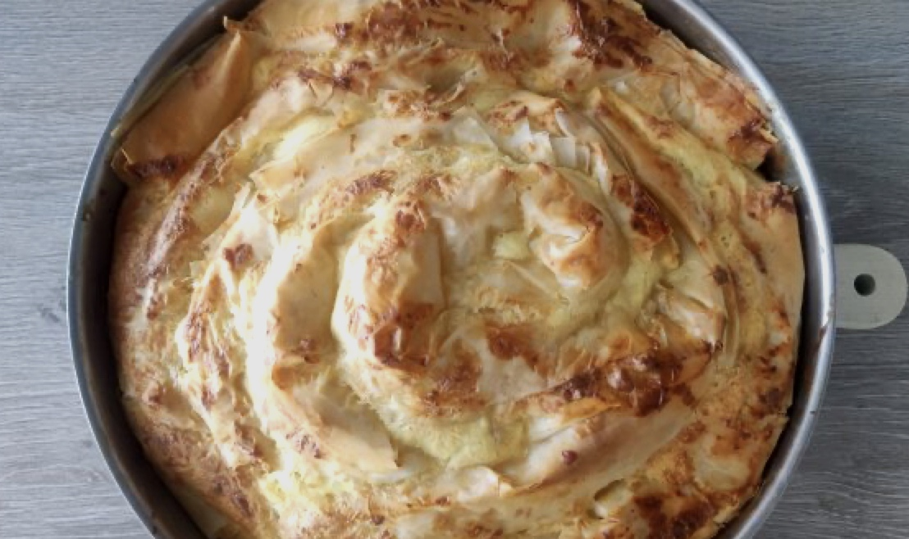

Banitsa
Copied from gotvach.bg

Необходими Продукти
- кори за баница - 1 пакет (500 г)
- мазнина - 150 мл олио и масло 50х50
- яйца - 5 бр. става и с 2 или 3
- кисело мляко - 1 кофичка 400 г
- бакпулвер - 1 бр.
- яйца - 6 брсирене - 300 г (може и повече, ако обичате)
Начин на Приготвяне
- В купа разбийте яйцата, добавете киселото мляко и бакпулвера, разбъркайте.
- Натрошете сиренето отделно. Разтопете маслото в олиото, за да се смесят добре.
- С четка намажете корите с мазнината две по две. На всяка двойка кори сипвате равномерно по 5-6 с.л. от сместа и поръсвате със сирене, така по-лесно се контролира количеството.
- Навийте корите на рула откъм късата им страна, за да станат по-дебели парчетата и по-сочна баницата. Навийте рулата в тава, намазана с мазнина, на охлюв и намажете отгоре с малко мазнина.
- Поставете тавата в предварително нагрята на 180°C фурна на средна скара и печете за 40-45 минути до готовност.
- Извадете баницата и я обърнете върху скара наопаки, за а се задуши от собствените си изпарения за 10-15 минути и най-вече така задушена баницата се отделя по-лесно от тавата.
Поднесете готовата баница със сирене с чаша айрян! Да ви е вкусно!